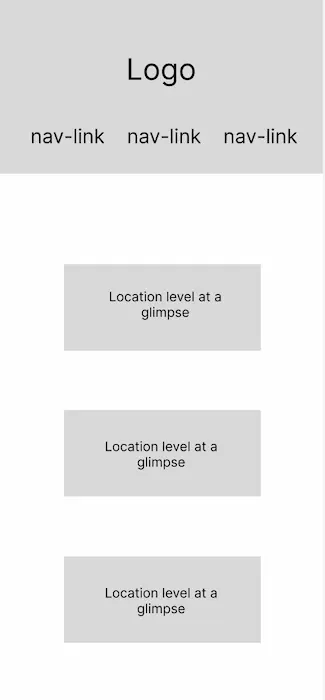
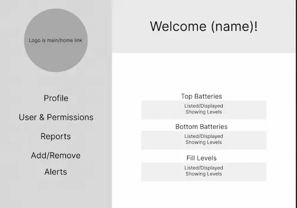

QuickShine Carwash Site Plan
Site Name
QuickShine Carwash
The name allows the audience to know immediately what the site is realated to. In this case, a carwash company.
Optional domain availability: quickshine.com
Site Purpose
The purpose of this website is to serve as a centralized platform for car wash owners or administrators to monitor and manage their wash sites efficiently. It provides live visibility of liquid levels for wash products at multiple locations, reducing the need for frequent on-site visits for routine checks.
The platform is designed for admin-level users to:
- View real-time liquid levels for each wash bay and location
- Manage site visits for refilling supplies or replacing monitor batteries
- Add, edit, and manage user accounts and permissions
While this project will not include login functionality, the site is structured as a realistic representation of a professional platform. Future expansions could include low-level alerts, automated reporting, and historical data retention to further enhance operational efficiency.
Scenario 1:
"As the owner of three car wash locations, you want to know which sites need attention today. How would you use this platform to check which wash bays are running low on liquid supplies and prioritize your site visits?"
Scenario 2:
"You've hired a new maintenance employee to help refill supplies at your wash bays. How would you use the platform to create their account and set their permissions so they can view liquid levels but not edit other user settings?"
Color Schema:
Choosing to do a brighter color palette as a modern carwash business might have.
Primary for header and small accents: --color-red: rgb(247, 74, 74)
Secondary for footer and section titles: --color-nuetral-light: rgb(148, 206, 202)
Typography:
For links, titles/headers: --font-family-primary: "Nunito Sans", sans-serif
For body text as secondary font style: --font-family-secondary: "Bitter", serif
Wireframes:
Mobile and desktop view.
 